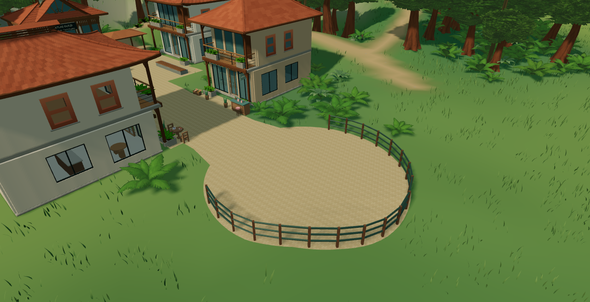
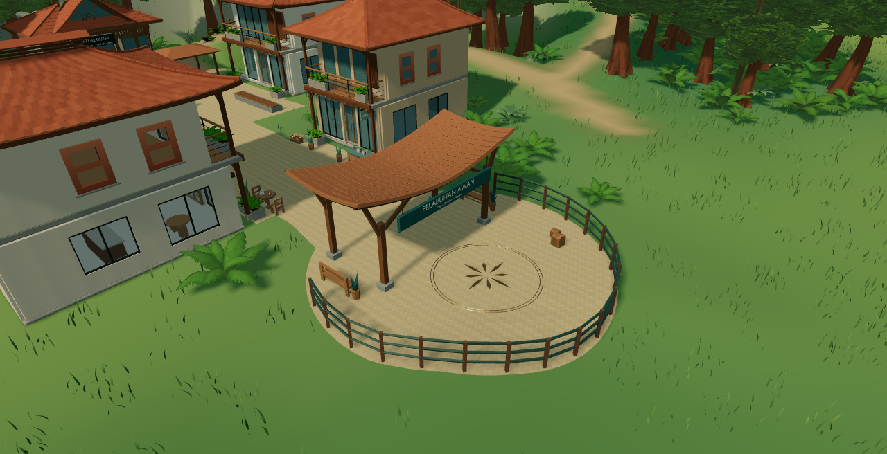
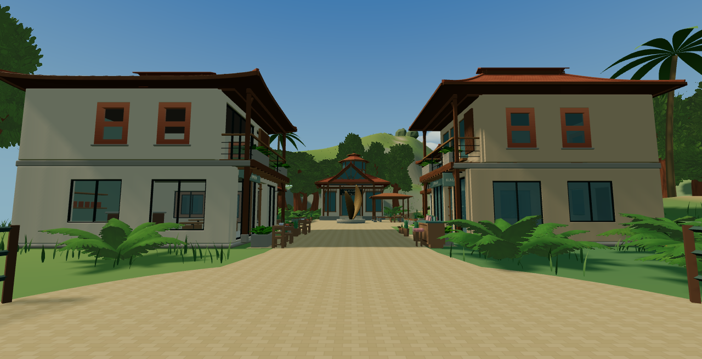
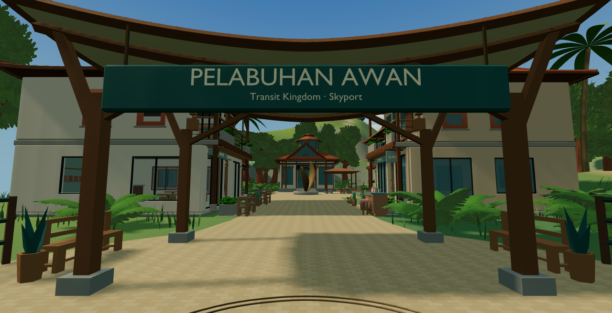
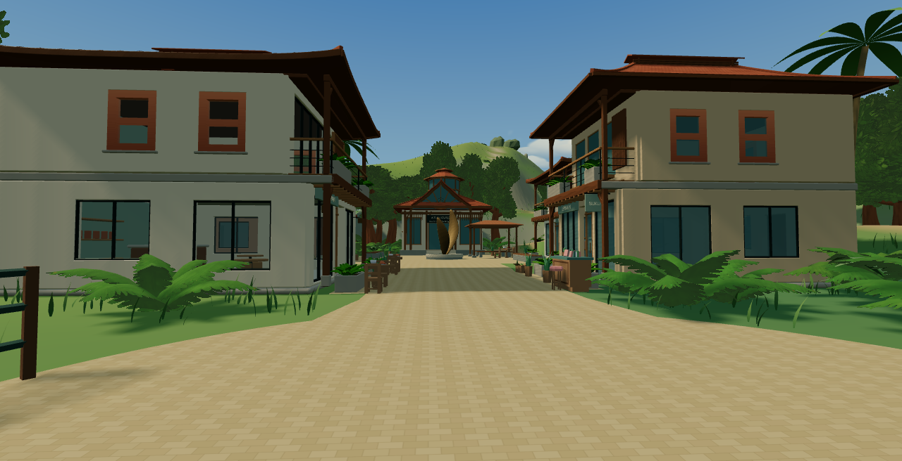
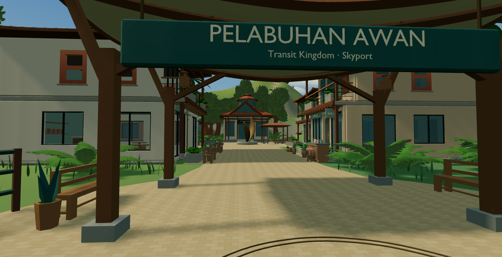
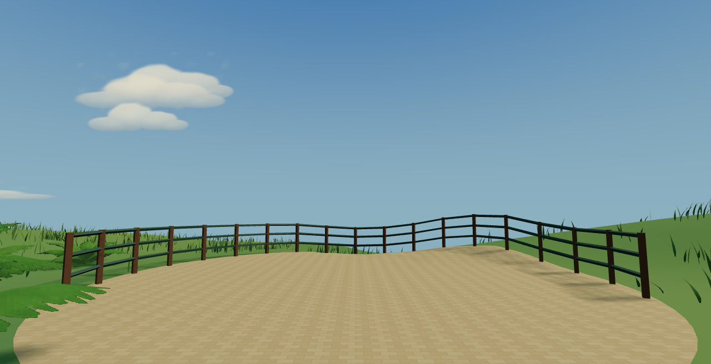
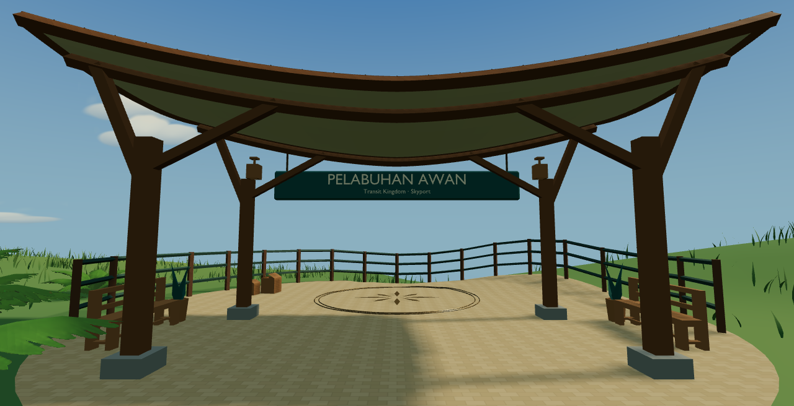
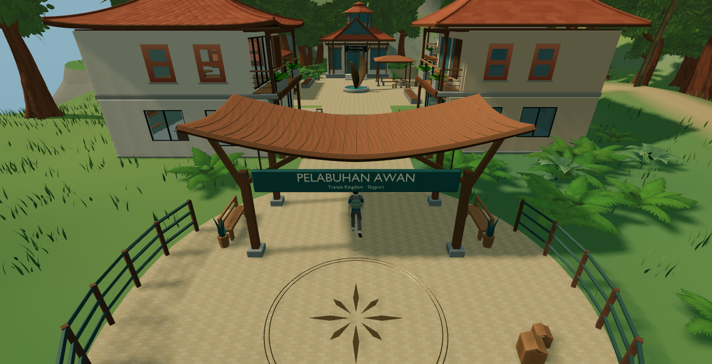

AR(N)AN Urban Atlas / R0-C3
Pelabuhan Awan
Actual game evidence. Owner visual approval pending. No public deployment. The accepted settlement, Guild, terrain and original 42 prop placements are preserved.
Each pair uses an identical camera, FOV, buffer size, lighting, shadows and Glass B. Left: accepted town without skyport. Right: new skyport enabled. Game buffer 1280 × 656, DPR 1. Camera and runtime records accompany each PNG.
A / Whole floating island
B / Aerial skyport

Before
AfterC / Spawn at 1.65 m eye height

Before
AfterD / Arrival toward Market Street

Before
AfterE / Market Street looking back

Before
AfterF / Actual animated explorer

Captured during the uninterrupted arrival-to-Guild controller walk, not a posed substitute character.